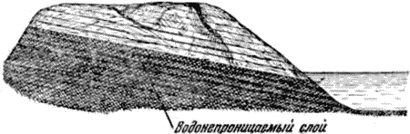

Круговорот воды в природе .

Вода — очень подвижная жидкость. Кроме того, в земных условиях она легко переходит из одного состояния в другое: испаряется, замерзает, плавится. Именно поэтому вода — вечный путешественник.
С поверхности рек, озёр, морей в любое время года в воздух непрерывно поднимаются невидимые водяные пары. Подхваченные ветром, они рассеиваются в безбрежном воздушном океане.
Чем выше температура воздуха, тем больше в нём может быть воды в виде пара. Однако количество водяных паров в воздухе не может расти безгранично: при любой температуре всегда наступает такой момент, когда воздух насыщается водяными парами. При 20 градусах мороза, например, в одном кубическом метре насыщенного водяными парами воздуха содержится 1 грамм паров, при нуле градусов — 5 граммов, а при 20 градусах тепла — 17 граммов.
Если в насыщенный воздух продолжают поступать водяные пары, то начинается сгущение или конденсация пара в кристаллики или в капельки воды. То же самое произойдёт, если насыщенный при определённой температуре водяными парами воздух станет остывать, — пар сгущается, и образуется облако.
Капельки воды, образующие облака, очень малы — диаметр их не превышает тысячной доли сантиметра (из одного куб. см воды их могут получиться миллиарды). Такие маленькие капельки легко удерживаются в воздухе. Этим и объясняется, почему облако, несущее иногда тонны воды, может долго находиться в атмосфере.
Но вот облако поднимается на такую высоту, что капли, находящиеся в его вершине, замерзают. Образовавшиеся кристаллики льда легко обволакиваются другими капельками и становятся тяжёлыми. Они уже не могут держаться в воздухе и быстро падают вниз. Если на пути встречаются тёплые слои воздуха, кристаллики тают, и образуются дождевые капли. Если же температура воздуха низка, идёт снег).
Выпавший зимой снег в массе своей лежит до весны, пока яркие солнечные лучи не превратят его в шумные, быстро бегущие ручьи. Тысячи ручьёв, собираясь вместе, бегут к реке. Начинается весенний паводок. Бывают годы, когда снег стаивает в несколько дней. Тогда особенно сильно разливаются реки. Маленькие, часто пересыхающие в сухое летнее время речушки превращаются в бурные, грозные по своей силе потоки. А большие реки, выходя из берегов, разливаются на десятки километров.
Не вся вода, выпавшая на землю в виде осадков, уносится реками в моря. Часть её снова испаряется, а часть просачивается сквозь почву. Достигая водонепроницаемого слоя (например, слоя глины, гранита, мрамора), она течёт по его скату (рис. 2). Некоторая часть подземных вод снова быстро находит выход к поверхности земли; тогда появляются холодные ключи. Их воды, вливаясь в ручьи и реки, заново начинают свой путь по земле, а испаряясь — в атмосфере. Другая же часть просочившихся сквозь почву вод проникает по трещинам пород всё глубже и глубже в недра земли. Достигнув слоев с высокой температурой, вода превращается в пар; пар поднимается вверх, снова сгущается в воду, чтобы опять начать свой подземный круговорот, или же выходит на поверхность в виде горячих источников.

Рис. 2. Достигая слоя глины, вода течёт по его скату.
Проследить весь путь, совершаемый водой в природе, трудно, во-первых, из-за его чрезвычайной сложности, а во-вторых, благодаря многообразию тех условий, в которых может находиться в природе вода. Если бы можно было последовать за частицей воды всюду, где она только бывает, то мы совершили бы одну из самых увлекательных экскурсий, какие только можно себе представить. И, выпивая стакан воды, мы с полным основанием можем думать, что эта вода в своё время могла блестеть в лучах зари на вершине Эльбруса, мчаться в струе горной речки, качаться в волне Чёрного моря, сверкать в радуге над Москвой, носиться с вьюгой над ледяными просторами Арктики или быть жадно впитанной из почвы корнями сибирской сосны.
Количество воды, участвующей в круговороте, общий контур которого мы только что наметили, поистине грандиозно. Достаточно сказать, что за один год в воздух поднимается около 400 тысяч кубических километров воды в виде пара. Мы уже знаем, что площадь суши почти в три раза меньше площади океана. Казалось бы, что и испарение воды с суши должно быть в несколько раз меньше, чем с поверхности водоёмов. Но если учесть, что вода испаряется и растительным покровом и что общая поверхность листьев в десятки раз превосходит площадь занимаемой растениями земли, то как будто очевидно, что суша должна испарять воды не меньше, чем водоёмы. В действительности же испарение с суши едва составляет одну пятую часть всей поступающей в атмосферу воды. Объясняется это тем, что испарение в водных бассейнах происходит не со спокойной, ровной поверхности; оно ускорено действием ветров, вызывающих образование волн и брызг.
Однако не вся вода одинаково интенсивно участвует в круговороте. Нижние холодные слои воды морей и океанов, представляющие собой спокойную массу, не принимают почти никакого участия в круговороте воды. На многие тысячелетия остаётся неподвижной и та часть воды, которая при формировании земной коры была включена как химическая составная часть в различные минералы или заполнила пустоты в горных породах. Эта вода освобождается лишь постепенно, благодаря геологическим изменениям и деятельности самого человека.
Мы познакомились с водой нашей планеты и проследили за её движением в природе. Теперь посмотрим, что представляет собой вода.